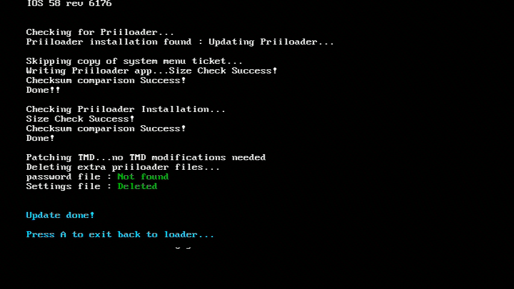
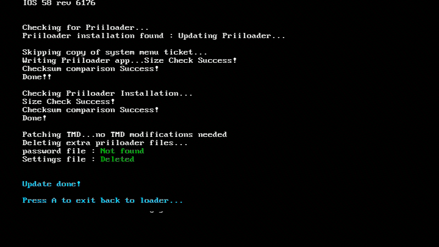

Priiloader
영어로 된 도움말을 원하시면 디스코드의 RiiConnect24에서 도움을 요청하세요.
튜토리얼에 관한 질문이 있다면, Wii Mini 해킹 디스코드 서버 에 가입하거나(권장) [email protected]에 이메일을 보내세요.
Priiloader는 Wii의 벽돌 보호를 한 단계 높입니다. Wii 메뉴가 실행되기 전에 불러와집니다 (이름이 설명하는 바와 같이). 이 도구는 Wii 메뉴의 핵을 활성화 시킬 수 있으며, 홈브루 채널, BootMii, 또는 당신이 원하는 어떠한 홈브루든 실행이 가능합니다!

vWii(Wii U의 Wii 모드) 에 Priiloader를 설치하지 마세요. 이것을 하면, vWii는 벽돌이 됩니다.
필요한 것
- SD 카드 및 USB 드라이브
- Priiloader 설치 마법사
방법
섹션 I - 다운로드/설치하기
- Download the Priiloader installer and extract it to the root of your SD card or USB drive.
섹션 II - Priiloader 설치하기
- Wii에서 홈브루 채널을 실행하세요.
- Priiloader 설치 마법사를 실행하세요.
- Wii 리모컨의 + 버튼이나 게임큐브 컨트롤러의 A를 누르세요
 

섹션 III - Priiloader 실행/설정하기
- Wii를 켤 때 RESET 버튼을 꾹 누르세요.
- Wii 미니를 사용한다면, USB 키보드를 꽂고 켜지는 동안 Esc를 꾹 누르세요.


- Priiloader 메뉴가 나타납니다.

System Menu Hacks로 이동합니다.
Priiloader를 설치하기 위해 USB를 사용한다면, SD 카드가 같이 꽂히지 않음을 확인하세요. Priiloader가 hacks_hash.ini를 찾지 못하게 할 수 있습니다.
- 다음 핵을 추천드립니다:
Region Free EVERYTHING,Block Disc Updates,Block Online Updates
save settings까지 스크롤한 다음 A를 누르고 B를 눌러 Priiloader의 메인 메뉴로 나가세요.Homebrew Channel까지 스크롤한 다음 A로 실행하세요.
시스템 메뉴 핵 목록
Priiloader로 활성화 할 수 있는 핵의 목록입니다.
| 핵 | 설명 |
|---|---|
| Block Disc Updates | 게임을 플레이 하기 전 뜨는 “Wii 시스템 업데이트” 창의 제거, 몇몇 게임은 이 창을 포함하여 업데이트를 강행함. |
| Block Online Updates | Wii 업데이트 비활성화. 업데이트는 오류 32007로 실패함. |
| Auto-Press A at Health Screen | “건강과 안전을 위하여” 창에서 자동으로 A 버튼을 누름. |
| Replace Health Screen with Backmenu | “건강과 안전을 위하여” 화면을 Wii 메뉴로 돌아갈 때 나오는 애니메이션으로 교체 |
| Move Disc Channel | Wii 메뉴 아무 곳이나 디스크 채널 옮기기 활성화. 원래는 첫 페이지 좌측 상단에 고정됨. |
| Wiimmfi Patch v4 | 모든 디스크 채널 게임을 Wiimmfi로 패치함. |
| 480p graphics fix in system menu | Wii 메뉴의 사소한 480p 오류 수정 |
| Remove NoCopy Save File Protection | 데이터 관리에서 원래는 허가되지 않은 세이브 파일을 SD카드로 옮길수 있게 함. |
| Region Free EVERYTHING | 다운로드 된 파일 포함 모든 Wii 어플리케이션에서 국가 제한을 해제. |
| Region Free GC Games (No VM Patch) | 게임큐브 디스크 국가 제한 해제. |
| Region Free Wii Games | Wii 디스크 국가 제한 해제. |
| Region Free Channels | 설치된 채널 국가 제한 해제. |
| No System Menu Sounds AT ALL | Wii 메뉴 효과음 모두 비활성화. |
| No System Menu Background Music | Wii 메뉴 배경음악 비활성화 |
| Re-Enable Bannerbomb v2 | 최종 Wii 버전에서 “Bannerbomb” 취약점 활성화. 홈브루 채널이 있다면 필요 없음. |
| OSReport to UsbGecko(slot B) | 메모리 카드 슬롯 B에 Wii 메뉴 로그를 디버깅 장치로 전송. |
| OSReport to UsbGecko(GeckoOS,B) | 메모리 카드 슬롯 B에 Gecko OS로 실행된 Wii 메뉴 로그를 디버깅 장치로 전송. |
| Force Standard Recovery Mode | 자동으로 복구 모드로 콘솔 실행. Wii 시스템 벽돌을 풀거나 복구 디스크 실행에 사용됨. |
| Remove Diagnostic Disc Check | “Wii 시작 디스크”라는 이름의 디스크와 타이틀 ID가 일치한지 확인하는 Wii의 검사 제거. |
| Lock System Menu with Black Screen | Wii 메뉴를 검정 화면으로 바꿔서 사용 불능으로 만듬. (활성화하지 마세요) |
| No-Delete HAXX,JODI,DVDX,DISC,DISK,RZDx | 이 ID의 채널 재활성화 (취약점으로 사용되어 시스템 업데이트에서 원래 차단됨) |
| Force Disc Games to run under IOS249 | 게임의 iOS로 디스크가 cIOS 249를 사용하게 만들기. 구워진 게임을 스스로 실행시킬 순 없지만, 구워진 디스크의 실행에는 필수입니다. (구워지지 않은 게임에서는 002 오류를 줄 수 있음) |
Continue to the Dos and Don’ts of Wii Modding
These are some guidelines to ensure you don’t brick your Wii.